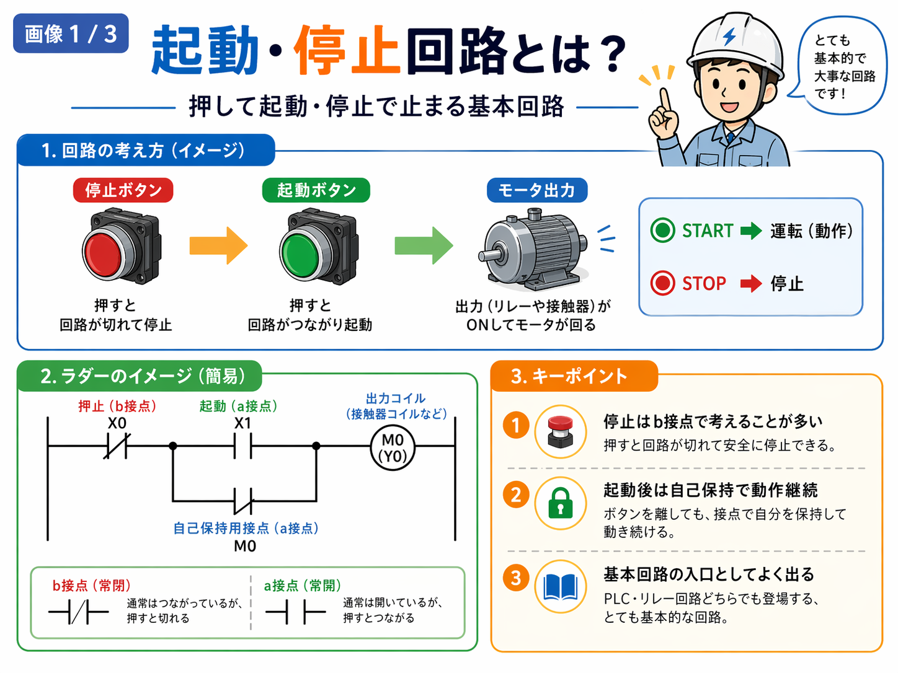
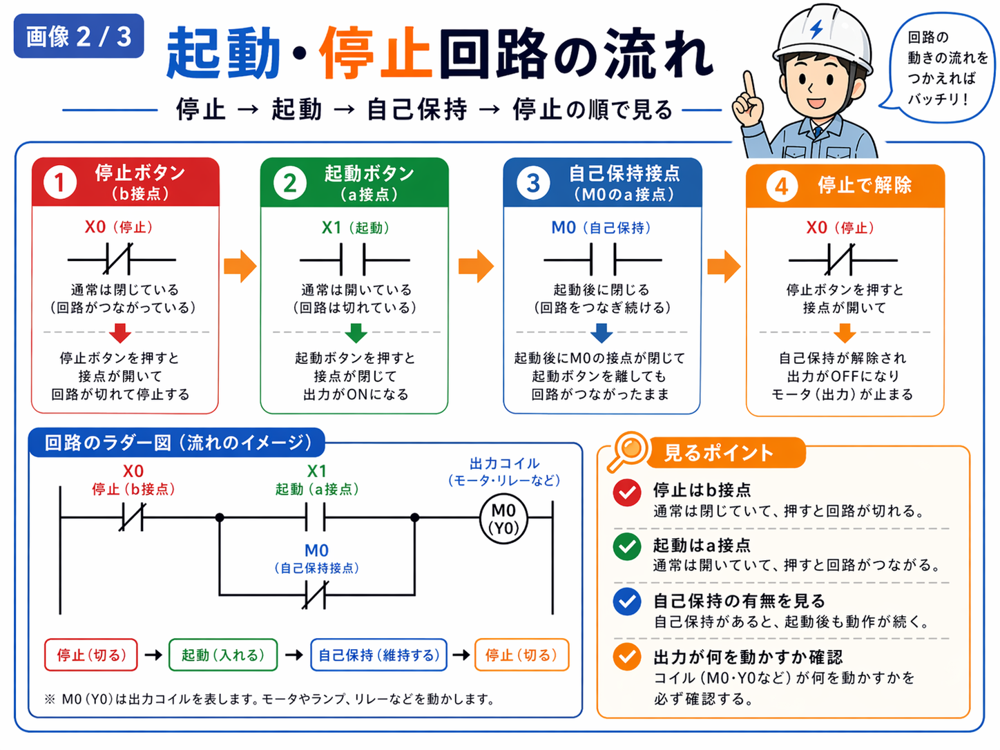

向いている人
- ラダーの基本回路を1つずつ理解したい人
- 自己保持回路の前後関係を整理したい人
- 起動ボタンと停止ボタンの考え方を分かりやすく知りたい人
- モータや出力がどう動くかを基本から追いたい人
起動・停止回路は、起動ボタンを押すと動き出し、停止ボタンを押すと止まる基本回路です。 多くの場合は自己保持を使って、起動後も動作を続ける形になります。

起動・停止回路は、起動ボタンで動き出し、停止ボタンで止まる基本回路です。
多くの場合は、停止はb接点、起動はa接点、起動後は自己保持で継続という形で考えると整理しやすいです。
最初は「停止で切る、起動で入れる、自己保持で続ける」と覚えると追いやすいです。
起動・停止回路は、設備やモータをスタートさせたり止めたりするための、とても基本的な回路です。
現場では、モータを回す、搬送を動かす、ファンを回す、リレーや接触器を動かす、といった場面の入口としてよく出てきます。
そのため、ラダー図を覚え始める時にもかなり大事な回路です。ここが読めるようになると、自己保持やインターロックなど他の基本回路にもつながりやすくなります。
起動ボタンを押した時に回路がつながり、出力がONになります。
起動後は自己保持接点で回路を維持して、ボタンを離しても動作を続けます。
停止ボタンを押すと回路が切れて、出力がOFFになります。
起動・停止回路は、動きの流れで見るとかなり分かりやすいです。
この順で見ると、ただの接点の並びではなく、動きの流れを表した回路だと分かりやすいです。

ここはかなり基本です。起動・停止回路を読む時は、まず停止と起動の接点の性格を押さえると分かりやすいです。
最初は、停止はb接点で切る、起動はa接点で入れると覚えるとかなり整理しやすいです。
起動・停止回路では、起動ボタンを押した後にずっと指を押し続けるわけではないので、普通は自己保持を使います。
自己保持とは、出力がONになったあと、自分の接点で自分を保持して動作を続ける考え方です。
つまり、
という形です。このため、起動・停止回路と自己保持回路はかなりつながりが強いです。
起動・停止回路は、設備の基本運転の入口としてかなりよく出ます。特に次のような場面で考えやすいです。
一番分かりやすい使い方です。起動ボタンでモータを回し、停止ボタンで止めます。
コンベヤや搬送機の運転開始・停止でもよく使います。
補機類の基本運転回路としてもかなりよく出てきます。
自動ではなく、作業者が押して開始する回路の入口としても使われます。
起動・停止回路を見る時は、次の順で追うと分かりやすいです。
停止はb接点で入っていることが多いので、普段つながっている回路として見る必要があります。
起動ボタンだけ見ても、押した後にどう維持しているかが分からないと回路全体は追いにくいです。
M0やY0だけを見て終わらず、その先で何を動かしているかを見ると実務でつながりやすいです。
起動・停止回路は、自己保持の考え方が入ることがかなり多いです。別物というより、かなり近い関係です。
最初は記号だけを覚えるより、
この流れで覚えた方がかなり分かりやすいです。
ラダー図は難しく見えますが、起動・停止回路はその中でもかなり基本になるので、ここが読めるようになると他の回路にもつながりやすいです。
起動・停止回路は、起動ボタンを押すと動き出し、停止ボタンを押すと止まる基本回路です。
多くの場合は、
という形で考えると整理しやすいです。
最初は細かい応用よりも、停止接点・起動接点・出力コイル・自己保持接点の4つを順番に追うと分かりやすいです。
起動・停止回路は、自己保持やインターロックの理解にもつながりやすいので、基本回路を横につなげて見ると全体像がつかみやすいです。